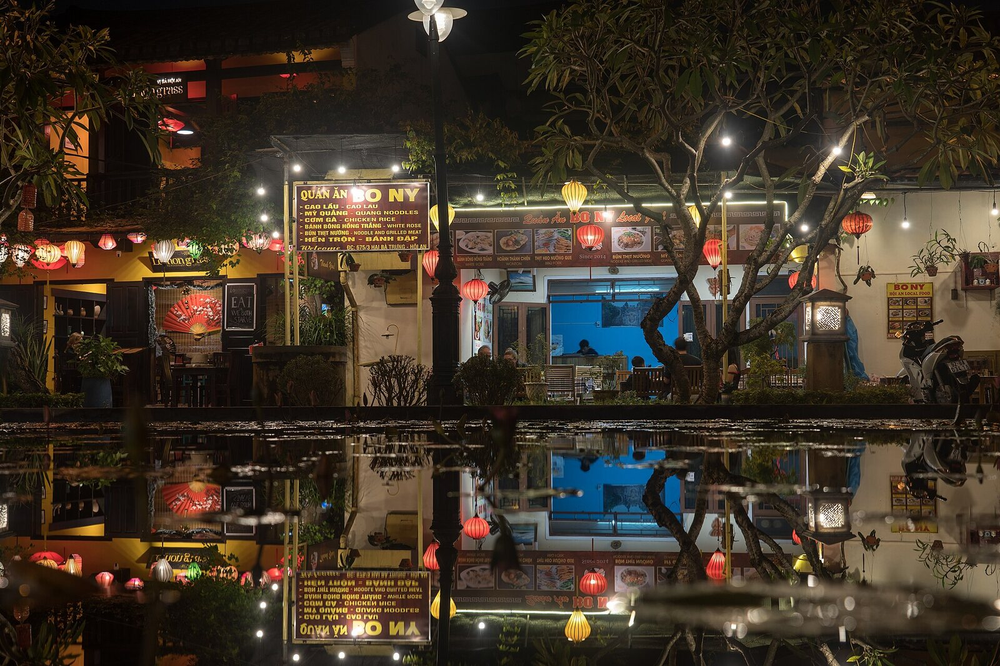

Tiếng Việt
Tiếng Việt English
English 한국어
한국어 中文
中文 Русский
Русский Deutsch
Deutsch„In welchem Monat sollten wir nach Hoi An reisen?“ Diese Frage hört die Rezeption des CGP Luxury Hotel am häufigsten, wenn Gäste zum Buchen anrufen. Die kurze Antwort: Jeder Monat in Hoi An hat seinen eigenen Reiz. Wer aber Wetter, Festkalender und Reiserhythmus jeder Zeit kennt, findet die Reise, die am besten passt. Dieser Beitrag fasst alles Wichtige zusammen, vom Wetter nach Monaten bis zu den zauberhaftesten Nächten der Altstadt.
Die zwei Jahreszeiten Hoi Ans
Hoi An liegt in Zentralvietnam und hat ein tropisches Monsunklima mit zwei deutlichen Jahreszeiten. Sie zu verstehen ist der erste Schritt der Reiseplanung.
Trockenzeit: Februar bis August
Sonnig, wenig Regen, ruhiges Meer. Februar bis April ist kühl und angenehm, Mai bis August heiß, manchmal über 35 °C.
Regenzeit: September bis Januar
Viel Regen, besonders im Oktober und November, wenn Überschwemmungen möglich sind. Dezember und Januar sind kühl mit Nieselregen.
 Foto: Steffen Schmitz / Wikimedia Commons, CC BY-SA 4.0
Foto: Steffen Schmitz / Wikimedia Commons, CC BY-SA 4.0Das Wetter Monat für Monat
Die Tabelle beruht auf langjährigen Klimadaten und dient zur Orientierung. Das tatsächliche Wetter schwankt von Jahr zu Jahr, prüfen Sie daher etwa eine Woche vor der Reise die Vorhersage.
| Monat | Wetter | Andrang | Tipp |
|---|---|---|---|
| Januar | Kühl, Nieselregen | Mittel | Jacke mitnehmen, ruhige Gassen genießen |
| Februar | Kühl, milde Sonne, wenig Regen | Hoch zu Tet | Zu Tet früh buchen |
| März | Kühl, klarer Himmel | Mittel | Herrlich zum Bummeln und Radfahren |
| April | Warme Sonne, ruhiges Meer | Hoch zu den Feiertagen Ende des Monats | Beginn der Badesaison |
| Mai | Sonnig, zunehmend heiß | Mittel | Früh morgens und spätnachmittags unterwegs sein |
| Juni | Heiß und sonnig | Hoch, Sommer | Gut für Familiensommerferien und Strand |
| Juli | Heißester Monat | Hoch, Sommer | Mittags im Hotel ruhen und schwimmen |
| August | Heiß, gelegentliche Schauer | Hoch | Vorhersage verfolgen, Schirm mitnehmen |
| September | Beginn der Regenzeit | Niedrig | Günstigere Zimmerpreise |
| Oktober | Viel Regen, Überschwemmungen möglich | Niedrig | Flexibel planen |
| November | Viel Regen, Überschwemmungen möglich | Niedrig | Vor der Reise an der Rezeption nach der Lage fragen |
| Dezember | Kühl, weniger Regen | Steigend zu Weihnachten und Neujahr | Festliche Jahresendstimmung |
Der Rat unserer RezeptionWenn Sie nur einen Zeitraum wählen können, nehmen Sie März oder April. Es ist kühl, regnet wenig, das Meer wird schön, und die Altstadt ist noch nicht so voll wie im Sommer.
Feste und Ereignisse im Jahr
Neben dem Wetter sind Feste ein weiterer Grund für die Wahl der Reisezeit. Dann ist die Altstadt besonders zauberhaft, aber auch voller.
- Monatlich, am 14. Tag des Mondmonats
Vollmondnacht in der Altstadt
In der Vollmondnacht jedes Mondmonats herrscht in der Altstadt eine besondere Stimmung: Viele Häuser dimmen das elektrische Licht und zünden Laternen an, Bewohner stellen Altäre vor ihre Türen, und auf dem Fluss treiben Laternen. Die schönste Zeit, Hoi An bei Nacht zu erleben.
- Erster Mondmonat
Mondneujahr und Laternenfest
Zu Tet ist die Altstadt prächtig mit Blumen, Spruchbändern und Laternen geschmückt. Am ersten Vollmond des Jahres (Nguyen Tieu) finden in den Versammlungshallen viele traditionelle Kulturveranstaltungen statt.
- 15. Tag des 8. Mondmonats
Mittherbstfest
Die Altstadt ist voller Laternen, Sternlaternen und Trommeln der Löwentänze. Kinder lieben die Atmosphäre dieses Festes besonders.
- Dezember
Weihnachten und Neujahr
Viele Restaurants und Cafés schmücken sich weihnachtlich. In der Silvesternacht ist die Altstadt voller Feierlaune zum neuen Jahr.

Foto: Alexkom000 / Wikimedia Commons, CC BY 4.0 Foto: Christophe95 / Wikimedia Commons, CC BY-SA 4.0
Foto: Christophe95 / Wikimedia Commons, CC BY-SA 4.0Zu Feiertagen früh buchenMondneujahr, die Feiertage Ende April und Anfang Mai, der Sommer und das Jahresende sind meist ausgebucht. Wenn Sie dann reisen, buchen Sie einige Wochen im Voraus.
Reisezeit nach Reisezweck
Jede Art von Reise passt zu einer anderen Zeit. Hier die Empfehlungen des CGP-Teams.
Flitterwochen, PaareFebruar bis April, besonders um den Vollmond
Familien mit kleinen KindernMärz, April oder die Sommerferien von Juni bis August
BadeurlaubApril bis August, das Meer ist ruhig und klar
FotografieFebruar bis April, klarer Himmel und schönes Licht
SparenSeptember bis November, günstigere Zimmerpreise
Langzeitaufenthalt, Remote-ArbeitJanuar, März oder September, ruhige Gassen
 Foto: Mig Gilbert from Brighton / Wikimedia Commons, CC BY-SA 2.0
Foto: Mig Gilbert from Brighton / Wikimedia Commons, CC BY-SA 2.0
Lohnt sich die Regenzeit?
Viele zögern, Hoi An in der Regenzeit zu besuchen, doch diese Zeit hat ihren eigenen Reiz. Die Altstadt ist weniger voll, die Luft kühl, die Zimmerpreise günstiger, und Hoi An im Regen besitzt eine stille, poetische Schönheit.
Was Sie vorbereiten sollten
- Einen leichten Regenmantel, einen Schirm und rutschfeste Schuhe.
- Einen flexiblen Plan: Regentage für Museen, alte Häuser, Cafés und Kochkurse nutzen.
- Die Wettervorhersage und die Hinweise der Rezeption zum Wasserstand des Flusses verfolgen.
Bei Überschwemmungen
Im Oktober und November kann nach starkem Regen der Uferbereich der Altstadt am Hoai-Fluss einige Tage überflutet sein. Das CGP Luxury Hotel liegt an der Straße Ly Thuong Kiet, etwa 1 km von der Altstadt. Bei schlechtem Wetter hält Sie die Rezeption auf dem Laufenden, schlägt Alternativen vor und hilft bei sicheren Fahrten.
Ein Regentag im HotelEin Regentag kann ein perfekter Ruhetag sein: ein Bad nehmen, am Fenster lesen, im Gartencafé heißen Tee trinken und die Küche des CGP genießen.


Buchungstipps nach Saison
- Hochsaison
Einige Wochen im Voraus buchen
Tet, die Feiertage Ende April, der Sommer und das Jahresende sind die Zeiten, in denen das Hotel am schnellsten ausgebucht ist, besonders bei Kategorien mit nur ein oder zwei Zimmern wie Zimmern mit Badewanne oder Poolzugang.
- Nebensaison
Flexibel und günstig
Von September bis November haben Sie mehr Zimmerauswahl. Eine gute Zeit für längere Pakete wie Slow Living Stay oder Arbeiten & Entspannen.
- Jederzeit
Direkt auf unserer Website buchen
Bei Buchung auf der Hotelwebsite zahlen Sie online über PayOne mit internationaler Karte, vietnamesischer Bankkarte oder QR-Code und können besondere Wünsche angeben, damit die Rezeption alles vorbereitet.
Es gibt keine perfekte Zeit für Hoi An, nur die Zeit, die zu Ihnen passt.Rezeption des CGP Luxury Hotel
Häufige Fragen
Welcher Monat ist der beste für Hoi An?
Februar bis April gilt als beste Zeit: kühl, regenarm und für alle Aktivitäten geeignet.
Wann ist die Vollmondnacht in der Altstadt?
Am 14. Tag jedes Mondmonats. Prüfen Sie vor der Reise den Mondkalender, um das richtige Datum zu wählen.
Sollte ich im Oktober oder November nach Hoi An reisen?
Es ist möglich, aber planen Sie flexibel, da Starkregen und Überschwemmungen auftreten können. Dafür sind die Gassen ruhig und die Preise günstiger.
Ist es in Hoi An im Sommer zu heiß?
Juni bis August ist recht heiß. Besichtigen Sie früh morgens und spätnachmittags, und ruhen und schwimmen Sie mittags im Hotelpool.
Reisezeit gefunden?
Ob Sonnen- oder Regenzeit: Das CGP Luxury Hotel empfängt Sie mit einem gemütlichen Zimmer und einem engagierten Team rund um die Uhr.